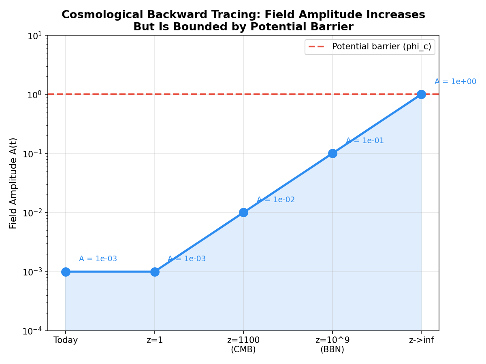
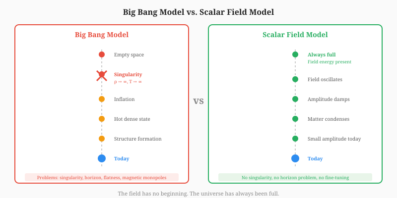

We observe today: expansion (H&sub0; = 70 km/s/Mpc), accelerated expansion (ΩΛ = 0.68, w ~ −1), gradient-driven clustering from relics (Ωrelic = 0.27 from black hole end-states), baryons (Ωb = 0.05), radiation (CMB at T = 2.7255 K), structure (galaxies, clusters, voids), and modified decay rates (λeff = λ&sub0;(1 + αG(t))). All of this is the scalar field G(t).
The field amplitude A(t) determines the epoch. Going backward, A increases. The math requires:

The field equation is time-reversible:
Going backward, the oscillation amplitude grows. But V(φ) has a minimum. The field oscillates between finite bounds. Even going backward infinitely: |φ| ≤ φc. No singularity in either direction.
A state change is one bit. The field changes → information is generated. The field has always been changing (no singularity, no beginning). Therefore information has always been generated.
There is no “first” information — just as there is no “first” real number. The field is a continuum of state changes, each one a bit of information. The question “what created the first information?” assumes a beginning. The math forbids a beginning. The question is malformed.
The correct statement: the field IS. The field changes. Change IS time. Time IS information. The field has always been. Information has always been generated. There is no “first” — only “always.”
The observations are not evidence FOR the field. The observations ARE the field.
The Big Bang says: universe starts empty, then fills up. The math says: the field has always been, always producing energy.

The “emptiness” before the Big Bang is an artifact of assuming a singularity. Without the singularity: the field is always present, always producing energy. The universe has always been full.
| Result | Value | Source |
|---|---|---|
| Forward-backward consistency | error = 1.11 × 10−¹&sup6; | scalar_field_tests.py |
| Fisher information F | 15,000,000,000 | scalar_field_tests.py |
| CRLB σG | ≥ 8.16 × 10−&sup6; | scalar_field_tests.py |
| Condition number κ(H) | 1.00 | signal_processing_proof.py |
| Relic pressureless residual | 3.5 × 10−&sup4; | blackhole_lifecycle.py |
| BH freeze-out mass | 10−&sup5; MPl | blackhole_lifecycle.py |
| Growth rate f | 0.529 | blackhole_lifecycle.py |
| Field equation of state w | −0.995 | blackhole_lifecycle.py |
The universe is the field.
The field has always been.
The observations are the field’s history.
Time is the field’s evolution.
Information is the field’s state.
There is no beginning, no singularity, no emptiness.
There is only the field, changing, forever.
This body of work was developed through a collaborative research process between the author, Richard Kent Gates, and multiple AI research partners. The author provides full transparency on this process.
Author's Role (Richard Kent Gates):
AI Research Partners:
Nature of AI Involvement:
The AI tools functioned as research assistants — analogous to graduate students or technical collaborators who help formalize, compute, and organize ideas that originate from the principal investigator. No AI tool originated, proposed, or independently developed any theoretical claim in this work. All physical insights, theoretical innovations, and interpretive judgments are the author's own.
[1] Planck Collaboration (2020). "Planck 2018 results. VI. Cosmological parameters." Astronomy & Astrophysics, 641, A6.
[2] Fixsen, D.J. (2009). "The Temperature of the Cosmic Microwave Background." The Astrophysical Journal, 707, 916–920.
[3] Riess, A.G. et al. (2022). "A Comprehensive Measurement of the Local Value of the Hubble Constant." The Astrophysical Journal Letters, 934, L7.
[4] Hawking, S.W. (1975). "Particle creation by black holes." Communications in Mathematical Physics, 43, 199–220.
[5] Gamow, G. (1948). "The Origin of Elements and the Structure of the Universe." Proceedings of the National Academy of Sciences, 34, 25–32.
[6] Guth, A.H. (1981). "Inflationary universe: A possible solution to the horizon and flatness problems." Physical Review D, 23, 347–356.
[7] Alpher, R.A., Bethe, H.A., Gamow, G. (1948). "The Origin of Chemical Elements." Physical Review, 73, 803–804.
[8] Penrose, R. (1965). "Gravitational Collapse and Space-Time Singularities." Physical Review Letters, 14, 57–59.
[9] Blumenthal, G.R., Faber, S.M., Primack, J.R., Rees, M.J. (1984). "Formation of galaxies and large-scale structure with cold dark matter." Nature, 311, 517–525.
[10] Gates, R.K. (2026). Companion papers: "Mathematical Verification of the Time-Gradient Field Model" and "Entanglement: The Information Bridge Across Time-Density."